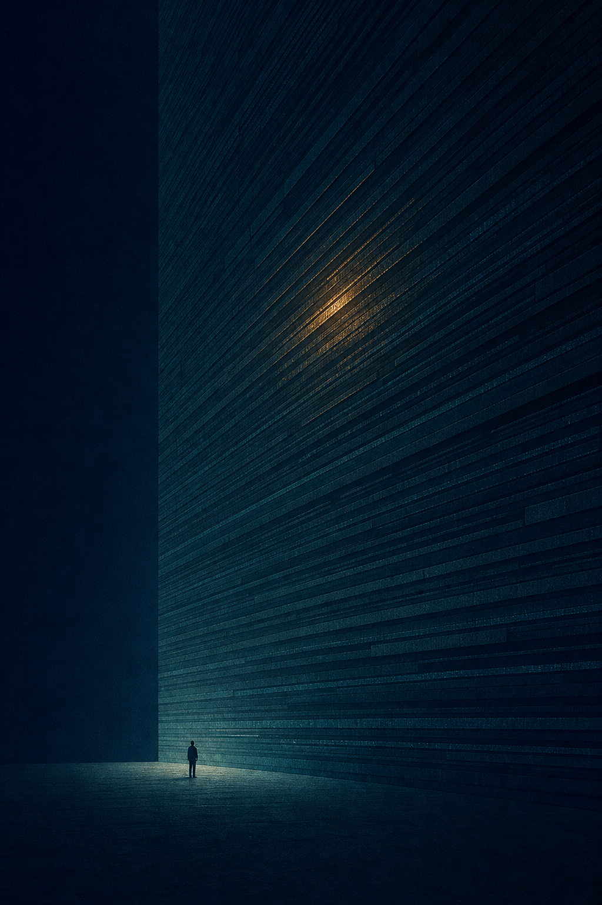
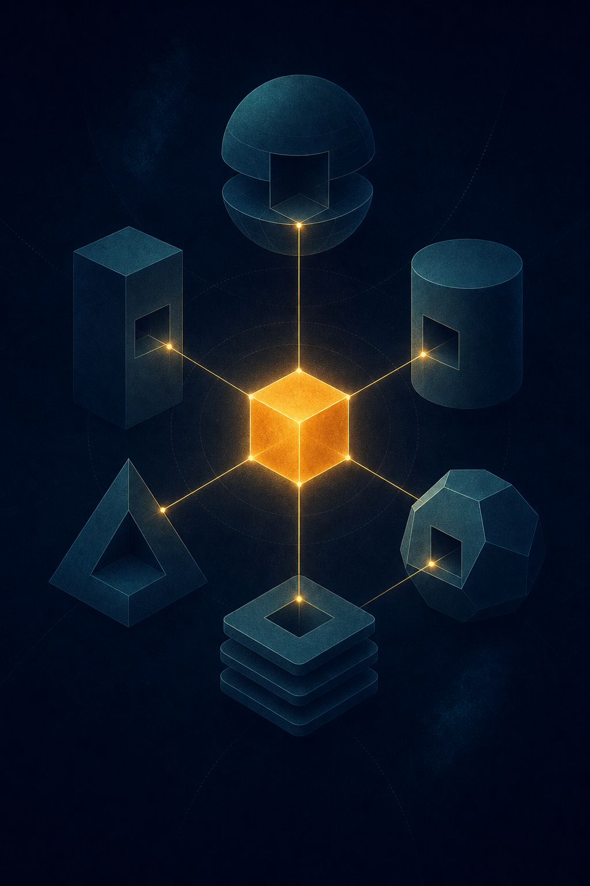
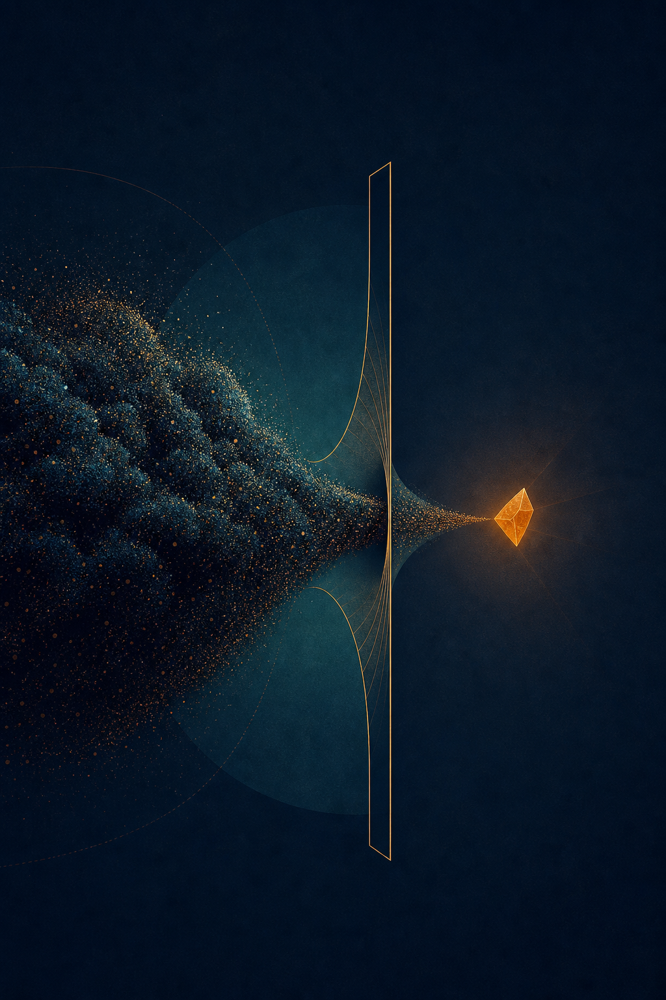
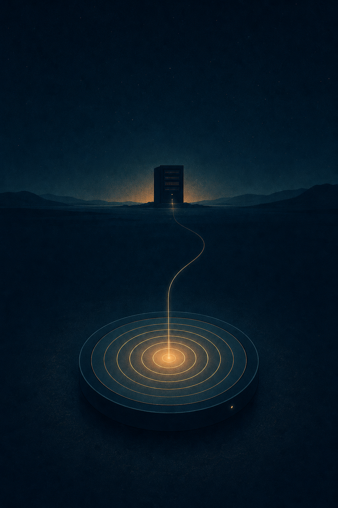

Скилл для CLI-агента. Устанавливается копированием одной папки: без конфигурации, без сервисов, без MCP в базовом сценарии.

| Запуск на прод-логах | Время | Токены |
|---|---|---|
| без скилла | 4:18 | 2 300 000 |
| со скиллом | < 1:00 | ~7 000 |
Почему так мало токенов. Скилл не подаёт логи в модель целиком. Он сначала строит карту, потом сужает область и читает только те фрагменты, которые нужны для вывода — остальное остаётся на диске.


